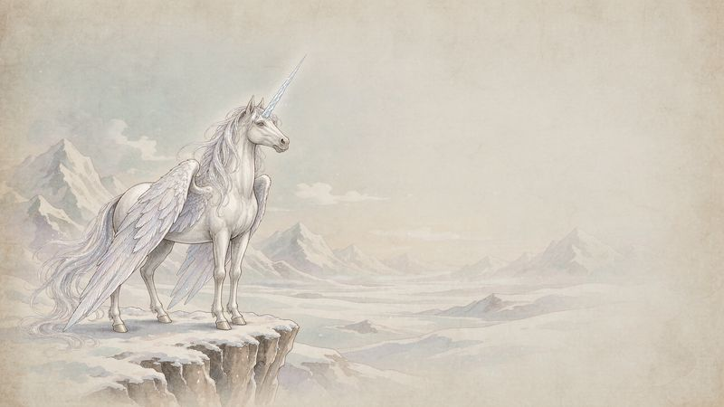
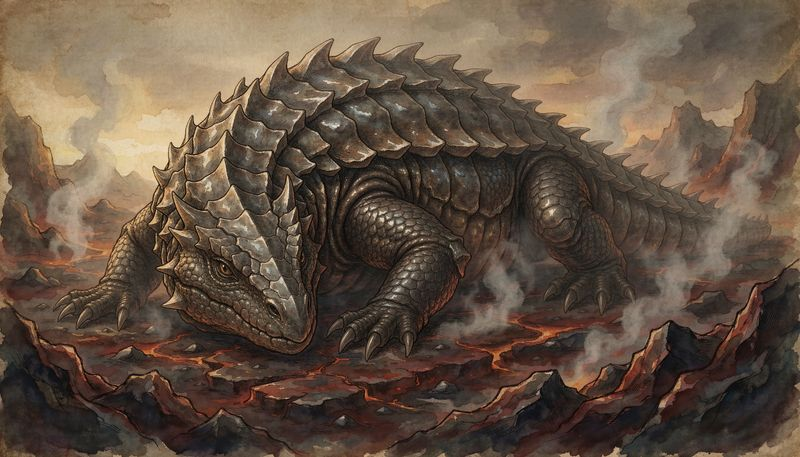
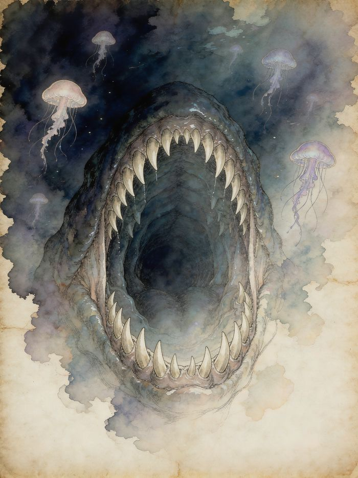
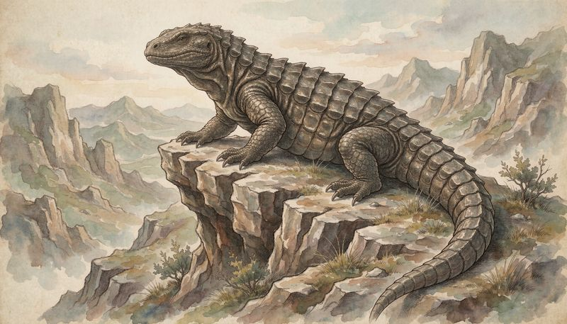

恩格海姆的原生生物 · 共 321 种（低阶 193 · 中阶 97 · 高阶 31）
它们生于此地，早于人类，也与人类争夺着同一片土地。名录之后附完整数值总表。
按区域与阶位收录的魔物名称。
珂莱迪亚
低阶 · 16
雪鬃羊角蹄兽霜羽燕霜尾鳕霜腹鲈霜背蝽霜足螽霜背马陆霜尾蜂霜壳甲虫霜背甲虫霜纹蛾霜翼蜻蜓霜鳞鳕雪绒兔冰爪鼬
中阶 · 11
霜鬃狼凝霜枭凛霜鸢冰脊巨蟹银鬃狼灰鬃巨熊岩甲龟暗影枭霜翼巨蛾银腹巨蛾灰腹巨蛾
高阶 · 5
凛冬霜狼霜翎天马泰坦巨熊莫拉格翼鹫极霜翼鹫
奥兰联盟
低阶 · 24
铁蹄野牛灰鬃羚烬毛狐褐背豺铁颚蚁火羽雀灰烬鸦熔岩甲虫焰翅蝗焰斑蝽焰足蜈蚣焰针蜂焰尾蜻蜓焰纹蛾焰翼蝶褐羽鹑褐背鹑褐腹鹑灰影豺鸣岩蝉鸣刃蝉钢颚蝗铁颚蝗刃翅螽
中阶 · 19
熔岩蜥灰鄂蛇褐壳巨蟹铁鄂蛇灼脊铁尾蛇黑脊熔猪石脊巨蜥岩斑羚辉焰银翼隼银翎鹤铁脊豹铁翼隼银爪鼹铁尾獾银鄂蛇岩冠蜥铁壳巨蟹雷冠鹰银翼巨蝎
高阶 · 7
烬鳞巨兽炎翼狼雷加尔巨鹰铁甲龙蜥熔核巨蛇铁甲魔蝎铁翼魔蝎
格鲁恩
低阶 · 41
沙地鼠黄腹獴沙黄兔沙爪鼩沙行蜥灰腹蜥灰额蛇灰脊蜥沙颚蜥灰额蜥棘刺蝎褐斑蝎银斑蝎铁额蝎岩尾蝎蚀骨水母银腹水母铁壳蟹幼体褐壳蟹幼体褐壳蟹灰壳蟹银壳蟹黑鳞鱼银鳞鱼铁鳞鱼褐鳞鳕灰腹鲈铁腹鳕银尾鳕褐尾鳕灰额鳕夜影蝠影蝶影蝽影蜈蚣影蝎影蜂影尾蜻蜓暗纹蛾影镰螳影寄生蜂
中阶 · 39
影猫夜枭灰影狐银壳巨蟹离蛛幽沙蟒晦甲石蛇铁喙鸢石喙鸢铁脊巨蜥渊颚蛇铁额巨蝎沼鼋沼鳄水影蛇巨齿鲈巨齿鲈王铁壳巨蟹石壳巨蟹褐壳巨蟹灰壳巨蟹铁颚巨鱼银背鲈褐颚巨鱼铁脊巨鱼石颚巨鱼铁尾巨鱼银颚巨鱼苍白巨蛛铁棘巨虫褐斑巨蝎铁斑巨蝎石斑巨蜱银背巨蜱铁钩巨虫灰甲巨蜈蚣石腹巨蜈蚣深渊之喉深渊喉
高阶 · 12
雅鲁加翼马蚀雾蛇深渊蟒深渊蛛母深渊母巢龙首巨鱼深渊鲈深渊喉银鳍鱼王深渊巨鲈银翼巨蛾暗影银翼蛾
阿拉纳
低阶 · 75
岩甲穿山甲银背獾岩蹄羊白额鹿棕背獐岩斑羚岩额羊银额獐岩鼻鼹铁爪鼹黑蹄鹿石雀岩爪雀石爪雀岩尾雀石鳞蝰脊刺蜥岩额蜥银背蛇石腹蜥银腹蛇石尾蛇褐额蜥岩斑蛇铁腹蜥石额蜥铁脊蜥石背虫灰斑蝎石斑蝎石腹蜈蚣灰额蜈蚣岩甲马陆银背蜱石斑蜱岩蛭浅滩龟石壳龟灰壳龟石额鱼灰尾鲈铁腹鲈石腹鲈褐腹鲈银额鱼褐腹蛇褐尾蛇褐斑蛇灰腹莺灰眉莺灰尾莺铁背虫银背虫铁棘刺虫铁钩虫拟叶虫拟枝虫晶背虫岩蝗钢针蜂刃颚蚁刃足螳镜甲虫镜翼蝶白腰燕白额燕白翅燕银爪狸灰羽鼯白腹鼯铁尾松鼠褐尾松鼠白颊獭黑尾貉白尾貉
中阶 · 28
岩壳兽岩脊巨蜥石背巨虫石腹巨蜈蚣灰壳巨蟹铁壳巨蟹石壳巨蟹灰颊獾岩甲巨蜥石颚巨鱼银脊巨蜥银背巨蜱铁脊狼银羽枭铁脊巨鱼铁尾巨鱼岩额巨羊铁蹄蛮牛灰甲巨蜈蚣银背巨虫银颚巨鱼山铸巨蜥石喙鸢霜额白鹿铁翎鹤银翎鹤铁爪鹤银翼巨蝎
高阶 · 7
地龙岩冠蜥王岩冠蛇石翼鹫银翼鹰王铁甲鳄铁翼魔蝎
跨区域共有
低阶 · 37
绒尾兔石牙野猪灰毛鼬棘皮刺猬长耳兔灰吻鼩铁背豪猪褐腹鼬雾影信鸽灰背鸦银额鸽银胸鸽银背鸽铁喙雀灰蝮蛇灰尾蛇银尾蛇磷火蛾铁壳蝽黑耳狐黑脊野猪铁翼蜻蜓岩翼蜻蜓褐脊蜥铁腹蛇铁额蜥铁尾蜥铁斑蝎灰腹蛾铁腹蛾灰背虫铁腹蜱银腹蜱银腹蛾褐腹蛾共生铁蚁噬矿甲虫